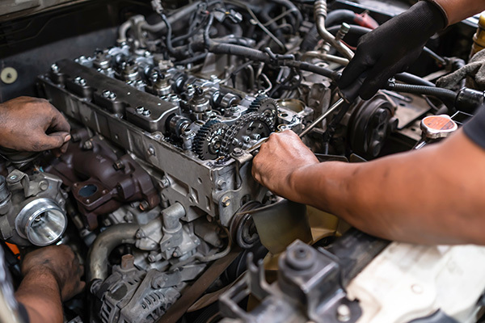

Expert Motorcycle Engine Repair You Can Trust.
Keep your motorcycle running smoothly with our professional engine inspection, troubleshooting and repair services. Our experienced technicians work to restore engine performance and reliability.

Restore Your Bike's Engine Performance
Your motorcycle engine is the heart of your ride. Engine problems can affect performance, fuel efficiency and overall reliability.
At MotoFix Garage, we carefully inspect engine components, identify possible issues and provide suitable repair solutions using professional tools and quality replacement parts.
Whether your bike has unusual engine noise, starting difficulties or performance problems, our team is ready to help.
Schedule Your InspectionComplete Engine Repair Solutions
We provide professional engine inspection and repair services to help keep your motorcycle performing reliably.
Engine Inspection
Detailed inspection to identify engine problems and unusual performance issues.
Engine Diagnostics
Professional checks to identify possible mechanical and engine-related faults.
Oil System Check
Inspection of engine oil condition and lubrication system.
Cooling System Check
Inspection of cooling components to help prevent overheating issues.
Component Repair
Repair or replacement of faulty engine components where necessary.
Noise Inspection
Checking unusual engine sounds and identifying their possible causes.
Performance Testing
Checking engine operation after completing the necessary repair work.
Final Quality Check
Final inspection to verify the completed repair work and engine operation.
Benefits of Professional Engine Repair
Timely engine inspection and proper repairs help maintain your motorcycle's reliability.
Smoother Performance
Help restore smooth and consistent engine operation.
Better Reliability
Identify engine issues early and reduce unexpected problems.
Fuel Efficiency
Proper engine maintenance can support efficient fuel consumption.
Longer Engine Life
Regular inspection and timely repairs help protect engine components.
Our Engine Repair Process
We follow a clear service process to provide reliable and professional engine care.
Initial Inspection
We understand the reported problem and inspect your motorcycle.
Problem Diagnosis
Our technicians identify the possible cause of the engine issue.
Repair Work
We complete the agreed repair work using suitable tools and parts.
Final Testing
We check the engine operation and review the completed work.
Is Your Motorcycle Engine Giving You Trouble?
Don't ignore unusual engine sounds or performance problems. Book an inspection with MotoFix Garage and let our technicians help you get back on the road.
Book Your Engine Repair